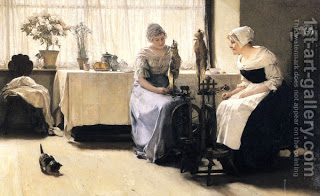

Shevuot (Oaths) 8 - Causes of Spiritual Leprosy - Tsara'at
There are seven sins that lead to Tsara'at: talking badly about others, bloodshed, vain oath, forbidden unions, haughtiness, robbery, and stinginess.
The goat brought on Yom Kippur suspends one's punishment for going to the Temple while impure. But if it does not erase it completely, how does the suspension help? Rav Zeira said, "By suspension, we mean that if the sinner dies before becoming aware of his transgression, he dies without this sin on his record."
Said Rava to Rav Zeira, "The sinner does not need the goat sacrifice for this, for if he dies, then death itself purges him of his sin!" Rather, Rava said, "The purpose of suspension is to shield him from the suffering he deserves on account of his sin, until he becomes aware of it and gains complete atonement thorough his offering."
Art: Carl von Marr - The Gossips